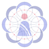

Naari Kavach
नारी कवच
The Kavach Mandala. A woman at the centre, held inside a ring of eight interlocking crescents that turn toward her like cupped hands. Protection on every side, drawn with compass geometry, never with a cage.
Bindi. Her head is the red dot, the only warm colour in the identity and the same red as SOS.
Sari and pallu. A flared silhouette with the pallu drawn as two border lines, as on a woven sari edge.
Eight crescents. The ashta (eight) directions of a rangoli. Each crescent passes under the next, so the ring reads as one continuous weave.

Construction

8 circles r = 16.5 on an orbit of 29.5, each minus a twin shifted 6.2 toward the centre. Every crescent is masked by the disc of its clockwise neighbour plus a 1.6 gap.
Lockups

Sizes
Clear space
¼ markKeep a quarter of the mark's width clear on all sides. Minimum size 16 px (favicon art below 24 px).
Colour
Type
Anek Devanagari 660 at 104% width for the wordmark. Mukta for text. Both by Ek Type, Mumbai.
Variants and misuse
 Don't stretchDon't rotateDon't recolourNo shadows or glows
Don't stretchDon't rotateDon't recolourNo shadows or glows